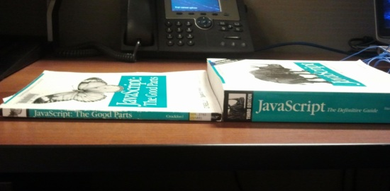

Introduction to ScalaJs
and building a Single Page App in React
Scala Usergroup Berlin Brandenburg - 24.05.16
Matthias Lüneberg
Agenda
- About Me
- Current Situation with JS
- Introduction to ScalaJS
- Basic ScalaJS demo
- Building a single page app (SPA)
- SPA demo/walkthrough
About Me
- Freelance Software Engineer Java/Scala
- Scala since 2012
- Interested in: FP, Cloud, Photography and good Coffee
Current situation

source: http://www.laurencegellert.com/2012/03/javascript-the-good-parts-review/
ScalaJS
- A compiler from
.scala to .js (Ecma 5.1)
- Development since 2013
- Started at EPFL by Sébastien Doeraene (@sjrdoeraene)
- Since Feb 2015 no longer experimental
- Brings "everything" from Scala to JavaScript
ScalaJS vs. pure JavaScript
- type-safety
- generics
- expressiveness
- immutability
- tooling
Building an SPA with ScalaJS
- ScalaJS
- Community Libs (akka-http, circe, cats)
- Scalajs-react (by @japgolly)
- Webjars (Bootstrap, React, jQuery)
- SBT